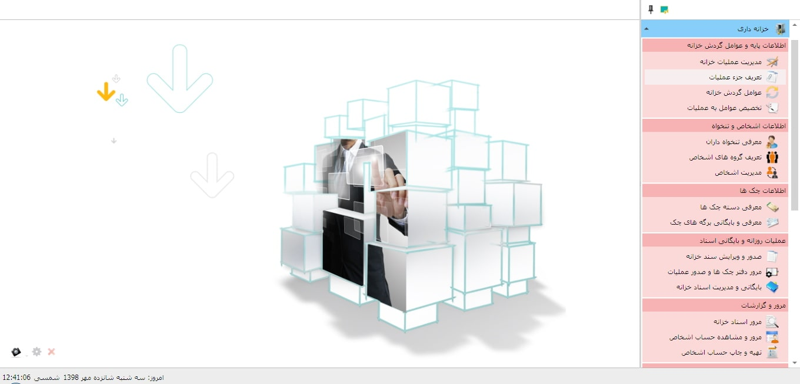

استفاده کارآمد از نقدینگی را می توان یکی از نگرانی های مسئولان مالی سازمان ها و موسسات اقتصادی دانست. به همین خاطر است که کنترل و نظارت بر گردش وجوه نقد در سازمان ها اهمیت ویژه ای دارد. مدیریت شایسته وجوه نقد، زمینه های لازم را برای پرداخت های برنامه ریزی شده فراهم می کند. در سیستم خزانه داری سایان تلاش بر این است که تسهیلات لازم برای مدیریت بهینه وجوه نقد و کنترل وضعیت نقدینگی موسسات و سازمان های اقتصادی مهیا شود. برای شروع کار با سیستم خزانه داری شما باید اطلاعات پایه مورد نیاز خود را از قبیل اطلاعات اشخاص، حساب های بانکی، صندوق ها، مراکز هزینه، دوره های مالی و ... را در قسمت « اطلاعات پایه و مشترک » وارد کنید که به تفصیل در راهنمای مربوطه شرح داده شده است. اگر از صفحه ی اصلی نرم افزار سیستم خزانه داری را انتخاب کنید صفحه ی زیر نمایان می شود :
در تصویر بالا زیر سیستم های خزانه داری را مشاهده می کنید. برای آگاهی از نحوه ی استفاده از بخش های مختلف این سیستم به راهنمای بخش های مربوطه مراجعه کنید.